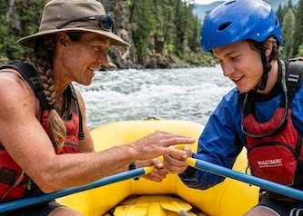
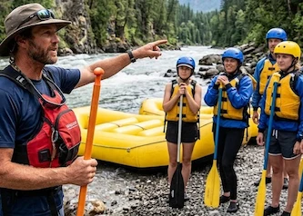
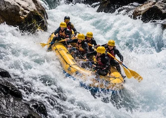
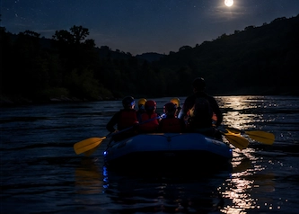
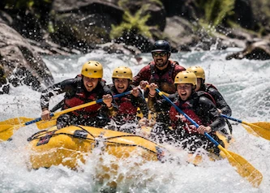
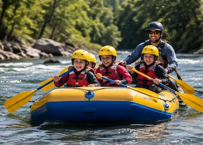

Nossos passeios:






Encontre a aventura perfeita para você e descubra novas emoções nas águas da RaftRush!
Play na AventuraSua primeira aventura nas corredeiras? Nunca praticou rafting? Não se preocupe! Nosso passeio para iniciantes é ideal para quem deseja conhecer esse esporte emocionante com segurança e diversão. Antes de entrar no rio, você receberá instruções sobre os equipamentos, os comandos e as técnicas básicas. Prepare-se para remar em equipe, apreciar belas paisagens e criar memórias inesquecíveis em meio à natureza!
Já sabe o que está fazendo?! Para quem busca adrenalina e emoção, o rafting avançado oferece uma experiência intensa em corredeiras desafiadoras. Coloque suas habilidades à prova, trabalhe em equipe e enfrente cada obstáculo com coragem e determinação. Uma aventura para quem deseja sentir a energia do rio e viver momentos que ficarão na memória!
Pequenos aventureiros, grandes emoções! O rafting infantil é uma oportunidade para as crianças conhecerem a natureza, aprenderem sobre o rio e desenvolverem o espírito de equipe de uma forma divertida. Com acompanhamento de profissionais qualificados, equipamentos adequados e um percurso escolhido conforme a idade e as condições de segurança, a experiência se transforma em momentos especiais para guardar na memória.
Gosta de Acampar? Prepare-se para viver uma experiência inesquecível com o pacote de rafting de 3 dias da RaftRush! Explore as corredeiras, descubra paisagens incríveis e aproveite momentos de diversão e companheirismo. Ao final de cada dia, relaxe em nosso acampamento, compartilhe histórias ao redor da fogueira e contemple a beleza da natureza. Com rafting, noites sob as estrelas e atividades ao ar livre, essa é a oportunidade perfeita para sair da rotina, superar desafios e criar memórias que durarão para sempre!